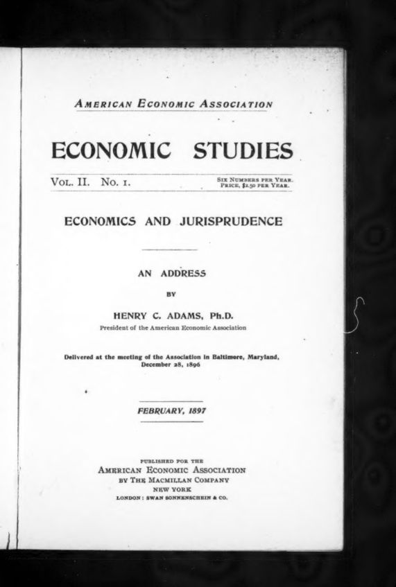

Adams, 1896: sem propriedade industrial não há liberdade industrial
Leitura: 11 min
No discurso presidencial de 1896, em Baltimore, Henry C. Adams sustenta que o contrato de trabalho falha porque o trabalhador nada tem a perder e propõe um novo tipo de propriedade; sete colegas respondem.


Numa sessão noturna de dezembro de 1896, em Baltimore, Henry C. Adams abriu o seu discurso de presidente da American Economic Association com um diagnóstico sem rodeios. Boa parte da confusão da teoria econômica e da discórdia na vida industrial, disse, tinha a mesma origem: a lei formal não expressava direitos industriais fundamentais. O texto, “Economics and Jurisprudence”, abre o segundo volume dos Economic Studies, em fevereiro de 1897, seguido do debate que ocupou a sessão da manhã de 29 de dezembro.
Adams avisa que não vai analisar doutrinas abstratas nem discutir questões jurídicas como um advogado. Usa “jurisprudência” num sentido largo, que não se reduz a leis votadas e precedentes de tribunal. É ao mesmo tempo filosofia, que quer entender a justiça; ciência, que explica a sua evolução; e arte, que formula as regras de conduta necessárias para realizá-la. Nesse sentido, a jurisprudência é o pano de fundo de toda atividade associada e a moldura que limita o exercício da liberdade.
“A lei não é um mestre-escola para instruir nem um tutor para mandar” (The law is neither a schoolmaster for instruction, nor a guardian for command)
Seria, antes, a expressão do senso ético de uma comunidade em torno do problema da vida em comum. Daí o mecanismo que Adams descreve. Quando a jurisprudência avança mais devagar que alguma forma de ação associada, os desejos que a lei não reconhece passam a invocar uma lei superior, natural ou divina. Há então dois desfechos: ou a ordem estabelecida reprime a aspiração, e a harmonia volta com o progresso parado; ou a aspiração é reconhecida e incorporada, e a harmonia vem como resultado do progresso. O discurso se organiza em três pontos.
O que mudou desde Adam Smith?
O individualismo, diz Adams, está em Adam Smith, que protesta em nome da lei natural contra a lei positiva; em Ricardo, que toma a margem de lucro como medida do progresso possível; em Senior, com a doutrina da poupança; e em John Stuart Mill, que organiza a análise em torno da oferta e da procura. A sua expressão prática é o laissez-faire, que supõe interesses idênticos e vê o interesse social como simples soma de interesses individuais. Adams não o descarta como erro lógico. Trata-o como força histórica, ligada à emancipação do servo, à evolução da propriedade e ao governo popular, e vigente por seis séculos no código de negócios dos povos de língua inglesa. Se hoje o juízo se inverte, é porque as condições mudaram.
A primeira mudança é o transporte. A ferrovia destruiu o localismo no governo, na indústria e no pensamento; a navegação a vapor criou um mercado mundial e removeu a principal barreira à concentração do capital; o novo sistema comercial afastou o comprador do vendedor e livrou os negócios da cortesia que os continha. O interesse pelas questões sociais, observa Adams, vem em boa parte de estarmos todos no mesmo barco: uma greve ou um locaute afetam a vida de quem não é parte, e por isso todos se sentem obrigados a opinar.
A segunda é a corporação. Na origem, era um braço do Estado: um corpo criado por lei para atingir fins públicos por meio do interesse privado. A corporação da segunda metade do século XIX difere em tudo. Adams aponta três traços. O seu crescimento só é limitado pelo mercado, porque o crédito das corporações é praticamente ilimitado, o que corrói as condições em que a concorrência funciona. Ela se vê como associação de vida perpétua, com contratos que prendem o futuro ao ganho presente. E não reconhece virtudes pessoais além da energia e da iniciativa, de modo que os gestores acabam com um código ético duplo, um para o negócio e outro para casa.
Por que o contrato de trabalho não se cumpre?
O segundo ponto contrapõe duas formas de exprimir a lei. Na linguagem do dever, típica de um regime de autoridade, a lei é um comando imposto e depende da força do Estado. Na linguagem do direito, típica da democracia, a lei é uma oportunidade oferecida e se executa pela vigilância interessada dos cidadãos. A jurisprudência inglesa pertence à segunda: fixa princípios gerais e deixa os detalhes ao contrato voluntário. Adams diz confiar no regime de contrato, desde que os direitos fundamentais estejam bem expressos e que a responsabilidade pese da mesma forma sobre as duas partes. O erro da economia inglesa, para ele, não foi enfatizar a concorrência, mas supor que a concepção burguesa de propriedade era dada pela natureza e estava fora da evolução.
Executar um contrato, no processo inglês, é cobrar a penalidade nele prevista ou implícita. Para isso, cada parte precisa ter alguma propriedade, privilégio ou vantagem que possa pôr em risco como garantia da sua conduta. A grande massa dos trabalhadores não tem nada disso. Os contratos de trabalho ficam, de um lado, sem responsabilidade e, portanto, sem execução possível pelo processo ordenado da lei. Daí, segundo Adams, a imprudência com que os trabalhadores às vezes defendem as suas reivindicações e a tendência dos empregadores a apelar à força, porque não há outra coisa a que apelar para conter homens sem propriedade.
Quem apela à força, conclui, dá as costas à sociedade de direitos e se volta para a sociedade de deveres. A saída conservadora seria difundir a responsabilidade comercial, o que exige que todos estejam em condição semelhante quanto à propriedade: não no montante possuído, mas na relação que a propriedade estabelece entre o proprietário e a indústria. As perguntas sobre quão feia deve ser a cara para virar intimidação, ou quantas formas de conspiração existem, interessam pouco ao economista. O papel dele seria expressar os direitos do trabalho ainda não reconhecidos e impor ao trabalho a responsabilidade sem a qual a liberdade é só um nome.
Que propriedade seria essa?
O terceiro ponto parte de um princípio da tradição inglesa de liberdade: só colhe os frutos da liberdade quem tem voz nas condições em que vive. A propriedade privada definida no século XVIII funcionou enquanto as ferramentas eram um apêndice do trabalhador, mas falha agora que o trabalhador é um apêndice da máquina. Adams nota que a mesma ideia está na doutrina inglesa da poupança pessoal, na cooperação que quer fazer de todo trabalhador um capitalista, na participação nos lucros e nos programas socialistas que fariam de cada cidadão um acionista. É o único terreno comum, diz, a quase todos os que escrevem sobre questões sociais.
“não há liberdade industrial sem propriedade industrial” (there is no industrial liberty without industrial property)
O que seria essa nova propriedade, que se difunde entre os trabalhadores, Adams admite francamente não saber. Defende, porém, que é legítimo supô-la, como o astrônomo calcula onde deve haver um planeta antes de encontrá-lo. Oferece três pistas. A primeira é uma análise mais completa da produção, que reconheça formalmente a produção social e associada, e não apenas a divisão do trabalho de Smith, os grupos de trabalho de Mill e a função do empresário. O que se precisa, diz, é de um desenvolvimento do direito comum, e não de mudança constitucional ou de nova lei. Mill teria levado a economia política até onde ela podia ir sob a concepção de propriedade do século XVIII.
A segunda pista é a negociação coletiva e o contrato formal de trabalho. Os sindicatos já não são condenados sem distinção, as greves não são mais tidas como ilegais em toda parte, mas empregadores ainda querem negociar com cada empregado, e empregados ainda recuam diante de responsabilidades expressas. O contrato provável, arrisca Adams, fixaria o pagamento depois de feito o trabalho, garantiria a cada trabalhador um lar industrial e criaria um conselho de arbitragem em cada indústria. As decisões desse tribunal virariam, por seleção natural, um direito comum do trabalho, e o trabalhador seria proprietário dos direitos assim definidos. A terceira pista é a ideia de agência industrial: a propriedade adequada à época teria caráter duplo, com os direitos dos indivíduos dentro da unidade produtiva, que formam o problema do trabalho, e os deveres dessas unidades para com o público, que formam o problema do monopólio, cujo alvo seria um preço justo e a preservação da mobilidade industrial.
O que responderam os debatedores?
Arthur T. Hadley, de Yale, elogia a força do discurso e acha que ela é excessiva. Pela história constitucional inglesa, diz, a liberdade esteve associada à aplicação imparcial do precedente, não ao poder de mudá-lo; e a sucessão perpétua não é novidade, porque já valia nas corporações do século XVII, como a East India Company. Para ele, o pobre precisa de uma execução vigorosa e imparcial das responsabilidades, e o progresso virá seguindo as linhas antigas. Franklin H. Giddings, da Columbia, lê o discurso como conservador e sugere uma forma concreta de propriedade: o direito do empregado fiel a um aviso prévio de demissão proporcional ao tempo de serviço, ou a uma indenização em dinheiro, perdido se ele romper o contrato. C. S. Walker, do Massachusetts Agricultural College, propõe que o sindicato mantenha um fundo e o empenhe como garantia dos contratos dos seus membros.
L. S. Rowe, da University of Pennsylvania, lembra que a ideia original da corporação como agente do Estado teria levado a uma prestação de contas estrita, encoberta depois pela responsabilidade limitada, e vê na exclusão da arbitragem e das organizações reconhecidas uma sanção possível contra o trabalhador. Henry W. Farnam, de Yale, observa que a quebra de contrato mais comum é a greve, em que o trabalhador abre mão do emprego de propósito, e prefere a negociação coletiva. George Gunton, de Nova York, conta que em Lancashire e Yorkshire o aviso prévio é regra e pouco apreciado pelos trabalhadores, e lembra o contrato imposto em Fall River, em 1875, depois de uma grande greve. Edward Cummings, de Harvard, aponta a falta de sindicatos organizados em bases comerciais e o peso crescente da reorganização industrial sobre o capital, e cita um plano testado na Inglaterra, com depósitos dos dois lados, comitê conjunto e conselho permanente de arbitragem.
Na resposta, Adams registra a objeção que John R. Commons lhe fizera na véspera: usar a palavra “propriedade” num sentido novo confundiria o assunto. Ele admite o risco de empregar palavras velhas para ideias novas, mas lembra que propriedade nunca significou sempre a mesma coisa; designa uma série de direitos adquiridos ao longo do tempo, à qual o problema do trabalho acrescentaria mais um. Entre alterar o sentido de uma palavra e cunhar outra, fica com a primeira opção, que chama de método comum da evolução histórica.
Na minha leitura
Na minha leitura, o argumento central de Adams é um argumento sobre execução de contratos. Um contrato só disciplina quem tem algo a perder; se uma das partes não oferece garantia, a promessa vale pouco, e a outra parte tende a buscar proteção fora do contrato. É a mesma lógica que hoje aparece na discussão sobre crédito sem colateral, reputação e contratos incompletos. A originalidade do discurso está em tratar a lei como instituição que evolui com a técnica e a organização da produção, e não como dado fixo sobre o qual a economia opera.
O debate mostra o custo prático da proposta. Os colegas aceitam o diagnóstico, mas pedem a forma concreta: aviso prévio proporcional, fundos sindicais, depósitos de garantia, arbitragem. Cada sugestão cria um ativo que o trabalhador pode perder e, por isso, uma responsabilidade que ele pode assumir. A pergunta de Adams, que direito tornaria crível a promessa do lado mais fraco, continua sendo a pergunta de fundo de boa parte do direito do trabalho.
Glossário
- Jurisprudência
- no uso de Adams, o conjunto de princípios de justiça e regras de conduta de uma sociedade, mais amplo que a lei escrita.
- Laissez-faire
- doutrina de não intervenção do Estado na atividade econômica.
- Direito comum (common law)
- direito formado por decisões judiciais e precedentes, e não por leis votadas.
- Regime de contrato
- organização social em que os detalhes da cooperação são fixados por acordos voluntários.
- Sucessão perpétua
- capacidade da corporação de existir indefinidamente, independentemente da vida dos sócios.
- Negociação coletiva
- fixação de salários e condições de trabalho em acordo entre empregadores e representantes dos trabalhadores.
- Arbitragem
- solução de conflitos por um conselho ou tribunal escolhido pelas partes, fora da justiça comum.
Fontes
- Economics and Jurisprudence (pp. 7–35). Internet Archive (número completo, PDF)
- Discussion of President Adams’ Address (pp. 36–47). Internet Archive (número completo, PDF)
- Número completo digitalizado (domínio público): Internet Archive.
Documento em domínio público (EUA, publicado antes de 1931), via JSTOR Early Journal Content e Internet Archive. Resumo e comentário do autor deste site, sem afiliação com a American Economic Association. Encontrou um erro? Escreva: a correção é publicada no próprio texto, com data.
← ES 5 · Hopkins, 1896: quanto valiam as concessões de bondes de Cleveland? ES 7 · Manual de 1897 e a reunião de Baltimore: poupança, censo e ferrovias →